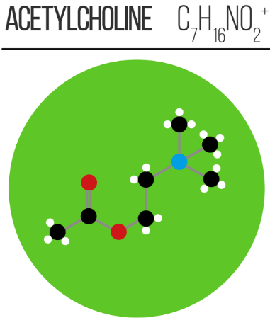

Neuroscience of social-cognitive enhancement for well-being and Neural bases of decision processes
Module 1 - Neuronal Communication
3. Synaptic Vesicles
- Small
membrane-bound organellesin the presynaptic terminal
- Store neurotransmitters at high concentration
- Cluster near active zones of the presynaptic membrane
Key properties:
- Release occurs in discrete, quantal events
- The release is mediated by SNARE proteins
- Vesicles are recycled locally
Process:
- SNAREs bring vesicle and presynaptic membranes close together
- Ca²⁺ influx triggers final fusion step
- Neurotransmitter released by exocytosis

Postsynaptic Events
Neurotransmitter binding produces graded signals of different types:
EPSP: Excitatory PostSynaptic PotentialIPSP: Inhibitory PostSynaptic Potential
Excitatory synapses:
- Depolarize the membrane
- Mediated by Na (or Ca²⁺ in special cases) influx
Inhibitory synapses:
- Hyperpolarize or stabilize membrane potential
- Mediated by Cl⁻ influx

Neurotransmitter action ends by:
Reuptakeinto presynaptic terminalEnzymatic degradation
Glutamate - Glu
Main excitatory neurotransmitter in the brain
- Increases neuronal excitability (EPSP)
- Really abbundant in the brain
Acts on:
- Ionotropic receptors
- Metabotropic receptors

Acetylcholine - ACh
Acts as a
Diffuse Projection Systemin the brain. This means that is produced in specific nuclei and projected throughout the brain. AKA:Cholinergic system
Involved in:
- Muscle contraction
- Vital and Cognitive functions
Acts on:
- Ionotropic receptors
- Metabotropic receptors
 
Serotonin - 5-HT
Acts as a
Diffuse Projection Systemin the brain. This means that is produced in specific nuclei and projected throughout the brain. AKA:Serotoninergic system
Involved in:
- Mood and Emotional processing
- Vital functions including Sleep and Appetite
Acts on:
- Ionotropic receptors
- Metabotropic receptors

Dopamine - DA
Acts as a
Diffuse Projection Systemin the brain. This means that is produced in specific nuclei and projected throughout the brain. AKA:Dopaminergic systemInvolved in:
- Motivation, Learning and Reward
- Movement control
Acts on:
- Metabotropic receptors

Noradrenaline - NA
Or Norepinephrine. Acts as a
Diffuse Projection Systemin the brain. This means that is produced in specific nuclei and projected throughout the brain. AKA:Noradrenergic System.
Involved in:
- Arousal and Attention
- Stress response
Acts on:
- Metabotropic receptors

Adrenaline

Glutamate Ionotropic Receptors
Glutamate activates multiple ionotropic receptors, including:
AMPAreceptors- Fast
excitatorytransmission - Allow
Na⁺influx - Main mediator of rapid excitation
- Fast
NMDAreceptors- Slower and Long-lasting kinetics
- Permeable to
Ca²⁺ - Involved in synaptic plasticity

Metabotropic glutamate receptors (mGluRs)
- Modulate synaptic transmission
- Regulate ion channel activity indirectly
- Influence plasticity and excitability
Similar mechanisms apply to many modulatory systems systems, such as dopamine and serotonin
Neuromodulation is the process by which a neurotransmitter does not directly trigger a fast electrical signal, but instead changes how a neuron or a network responds to external inputs.

Position of the Synapse
Also the position of a synapse along a neuron matters, because neurons are not electrically uniform cables. Where a signal arrives strongly shapes what it can do.
- Axo-dendritic
- Axon contacts a dendrite (Most common type)
- Often excitatory
- Axo-somatic
- Axon contacts the cell body
- Strong influence on spike generation
- Axo-axonic
- Axon contacts another axon
- Modulates neurotransmitter release